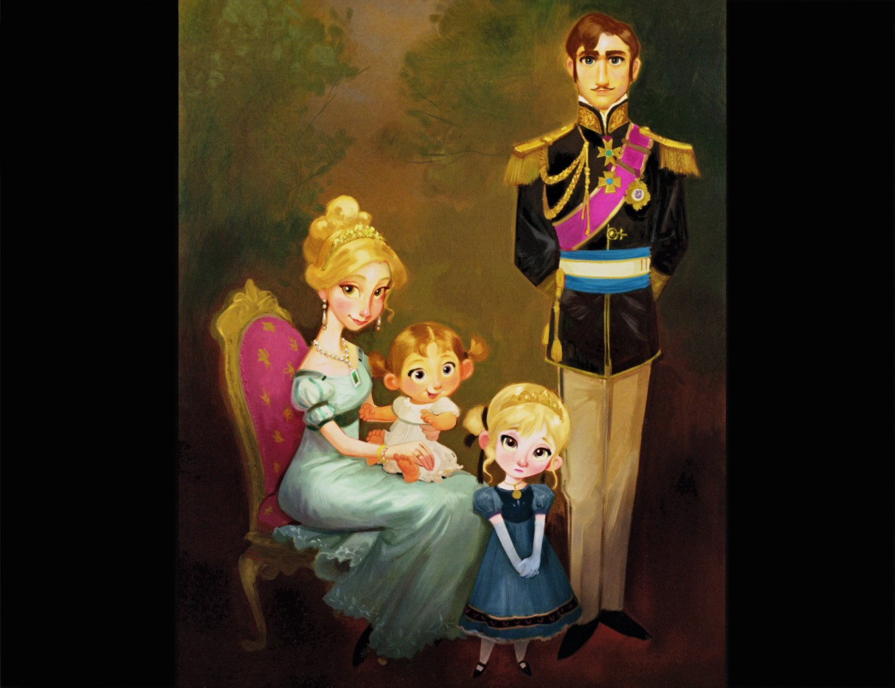
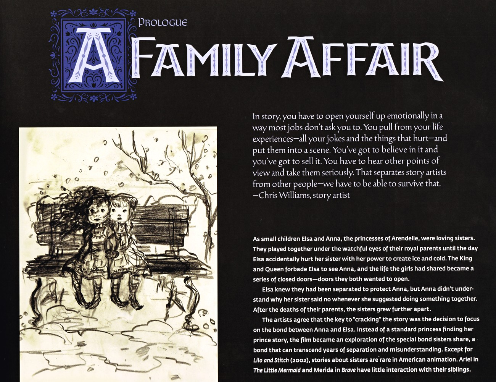

📖 设定集 · F1设定集
F1 图版 · 前言与故事工艺
F1 官方设定集图版 · p001–p012
5
本卷页数
🎨
设定集
中/英
双语
🖼️ F1 官方设定集 · 原书图版
F1 图版 · 前言与故事工艺
《The Art of Frozen》（Charles Solomon, Chronicle Books 2013） p001–p012
10
图版
p001–p012
原书页码
原书
扫描原图
笔记
逐页图注
📖 本图版收录《The Art of Frozen》开篇的剩余扫描页：版权页、John Lasseter 序言、导演 Chris Buck 与 Jennifer Lee 前言、从《雪之女王》到《冰雪奇缘》的引言，以及故事创作工艺与 Brain Trust 机制的记录页——项目史的起点都在这里。
📘 前言 · 引言 · 故事工艺（p001–p012）

扉页
本页为艺术设定集的扉页与版权页，标明书名《The Art of Disney Frozen》、作者 Charles Solomon，并注明由 John Lasseter 作序、Chris Buck 与 Jennifer Lee 作前言。封面画描绘安娜与克斯托夫乘驯鹿雪橇夜行于狭窄雪径。出版方为旧金山 Chronicle（F1设定集原页）

序言（John Lasseter）/ Preface
John Lasseter 回忆《冰雪奇缘》源自《雪之女王》的早期概念图（Paul Felix 所绘雪后雪橇），并指出将安娜设为雪后艾莎的妹妹是剧本突破点。美术总监 Michael Giaimo 带领团队赴挪威采风，从木板教堂尖塔与中世纪堡垒获得城堡灵感，并将 rosemaling 民间绘画/刺绣艺术融入城堡内饰与服装（F1设定集原页）

前言（Chris Buck & Jennifer Lee）/ Foreword
两位导演强调影片虽雪景极多，却因美术团队而色彩斑斓——日出暖桃黄、日落深粉蓝、月光下靛紫，皆由"白色为画布"理念展开。服装取材于斯堪的纳维亚 bunad 民族服与 rosemaling 纹样，克斯托夫的厚外衣、裤与靴则源于对北极原住民 Sami 人的研究。挪威与魁北克冰旅馆、冬季嘉年华的采风，让团队坚定了"颂扬冬天"的（F1设定集原页）

引言：从《雪之女王》到 Frozen
引言以 Walt Disney 名言开篇，主张童话电影是"中世纪的现代寓言"，并强调迪士尼对安徒生童话的改编（Walt 与安徒生皆出身寒微而享誉世界）。30–40 年代迪士尼已尝试动画化多部安徒生童话，《丑小鸭》(1931/1939) 为早期代表，亦开发过《雪之女王》等版本。左侧为斯堪的纳维亚风格织物花纹条带。（F1设定集原页）

引言续：迪士尼对《雪之女王》的早期研究与改编
本页详述迪士尼对《雪之女王》的长期纠结：1938 年 Mary Goodrich 将其主题定为"因信仰而重生"，但 Karl Berggrav 认为原作平淡难动画化；1940 年曾与 Samuel Goldwyn 商讨真人+动画合拍安徒生传记，终因二战事务搁置。2000–2002 年多个版本草稿（藏于 Animatio（F1设定集原页）

引言续：《雪之女王》如何蜕变为 Frozen
本页揭示项目转折：2008 年 9 月 Chris Buck 向 Lasseter 提案音乐版《雪之女王》而启动开发。关键突破在于舍弃 Gerda 的史诗旅程、只保留美丽的雪后，并把主角改为成人姐妹；制作人 Peter Del Vecho 指出" heroine 与 villain 是拥有共同过去的姐妹"这一设定才真正（F1设定集原页）

Arendelle 王室全家福概念画
本页为纯图页，展示 Claire Keene 绘制的阿伦黛尔王室全家福：王后 Iduna 抱婴儿安娜坐于粉色繁复座椅，幼艾莎着深蓝裙立于前方，国王 Agnarr 穿黑金礼服、配品红绶带；背景为暗调带植物暗示的肖像摄影棚。此图确立了早期王室成员造型与氛围基调。（F1设定集原页）

序幕：家庭之事
序幕"家庭之事"以故事艺术家 Chris Williams 谈故事需投入真情实感开篇。正文讲述艾莎与安娜幼时为亲密姐妹，直到艾莎意外以冰雪之力伤到安娜，国王王后禁止二人相见，姐妹关系变成"一扇扇关上的门"。父母离世后隔阂更深。艺术家共识：破解故事的关键在于聚焦姐妹羁绊，使其成为超越分离与误解的"姐妹情"而非传统"公主寻（F1设定集原页）

姐妹设定草图与创作访谈
本页配幼年姐妹草图（Jean Gillmore 多姿态、Claire Keene 并肩双公主），并收录关键创作访谈：Paul Briggs 称本片是"手足故事"而非公主片；Jennifer Lee 说明艾莎从"反派"转为"被迫隐藏自我的姐妹"，成为安娜的"阴/阳"对照；Lasseter 谈到为求真实而举办 Sister（F1设定集原页）

故事创作工艺与 Brain Trust
本页强调"好故事能托起弱动画，弱故事再精美也救不回"。Del Vecho 介绍 Pixar Brain Trust 评审机制——虽言辞犀利但只为成片更好，并以"退修如拆引擎"比喻《冰雪奇缘》的打磨过程。Jennifer Lee 谈自己以文字、故事艺术家以图画共同构思。引语指出 CG 电影需更多跨工种协作（毛发、布料、灯（F1设定集原页）
💡 图注说明
本页全部图版为《The Art of Frozen》（Charles Solomon, Chronicle Books 2013）原书扫描（原图复制，未压缩），图注（中文标题 + 要点首句）逐页取自官方设定集中文笔记，点击图片可查看原尺寸扫描。
📌 本页要点
你正在阅读《设定集》卷的「F1 图版 · 前言与故事工艺」。本页由电影正典、官方设定集与官方小说综合梳理，可作为该主题的速查入口；右侧目录可快速跳转到本页各小节。